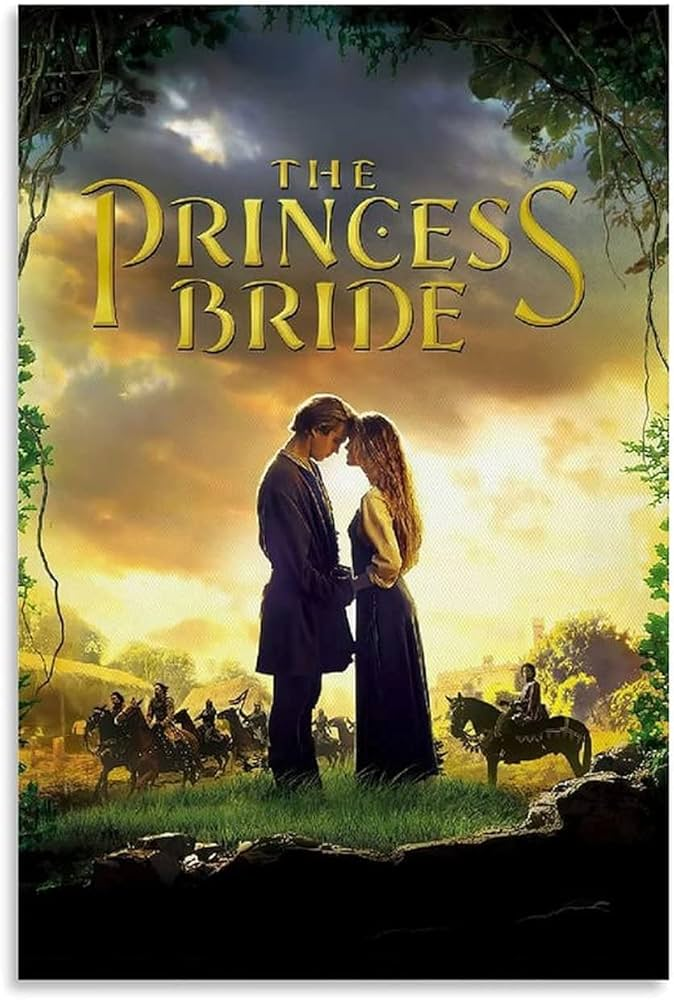

A grandfather reads his sick grandson the story of Westley, a farm boy who must rescue his true love Buttercup from the clutches of the villainous Prince Humperdinck, aided by a cast of unforgettable characters.